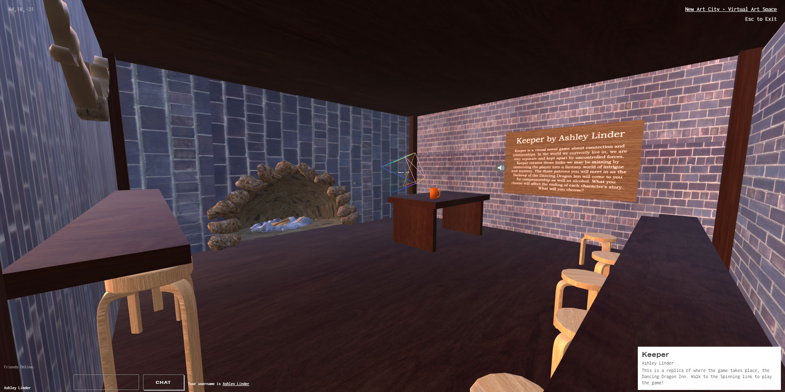

2020 BFA Exhibition
Keeper , Visual Novel Game, 2020

Keeper is a visual novel game about connection and relationships. In the world we currently live in, we are very separate and kept apart by uncontrolled forces. Keeper creates those links we may be missing by immersing the player into a fantasy world of intrigue and mystery. The three patrons you will meet in as the Barkeep of the Dancing Dragon Inn will come to you for companionship as well as alcohol. What you choose will affect the ending of each character's story. What will you choose?
Artist Bio
As a Digital Media Artist Ashley tries to make connections and shared experiences in her work. Human connection is most important to her and making those connections in her work is what comes first. Her practice generally consists of Digital Video, 3D Modeling, and Game Development. She hopes to continue in these mediums after graduation this semester, and eventually make strides into the games or entertainment industry.